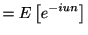
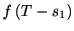
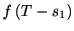
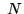

Next: 定常リニューアル過程
Up: 定常スパイク時系列モデル
Previous: 定常スパイク時系列モデル
Contents
Index
Subsections
確率変数が確率密度関数 (probability density function)
（ただしは非負の実数）に従うときに,
は指数分布に従うという. 指数分布は記憶のない分布と言われる (無記憶性: loss of memory property, memoryless property). ここで記憶がないとはに対して
が成り立つことを言う. 例として, 数年前に買った冷蔵庫を考えてみよう. 購入当初は順調に稼動していた冷蔵庫もやがて古くなり,
いつかは壊れてしまう. ここで冷蔵庫が壊れるまでの耐久年数の分布が記憶のなしの特徴を持つとしよう. 購入した冷蔵庫は 年経った現在も順調に動いている. さて, この冷蔵庫はあと何年もつだろうか. 今後年もつ確率は条件付き確率
年経った現在も順調に動いている. さて, この冷蔵庫はあと何年もつだろうか. 今後年もつ確率は条件付き確率
 で表すことができる.
ところが記憶なしの特徴1.1を使えば,
この条件付き確率は
で与えられる. つまり, 記憶なしとは, 年間冷蔵庫が稼動していたことが,
これから先に起こる故障の予測にとってなんの情報にもならないことを意味する.
で表すことができる.
ところが記憶なしの特徴1.1を使えば,
この条件付き確率は
で与えられる. つまり, 記憶なしとは, 年間冷蔵庫が稼動していたことが,
これから先に起こる故障の予測にとってなんの情報にもならないことを意味する.
それではどのような分布が記憶なしの特徴を持つのか.
条件付分布は次のように表すことができる.
これを1.1に代入して
なる関係式を得る.
指数分布関数
がこの性質を満たすことはすぐにわかる. したがって指数密度分布
は記憶なしの特徴を持つ分布であることがわかった.
イベント間隔が指数分布に従う過程を定常ポアソン過程という. ポアソン過程とは記憶のない事象の生成過程であり, 地震学・疫学・金融工学・保険数学など, イベント（地震・出生死亡・債務不履行・事故等）を解析する幅広い分野で基本となる確率過程である. 神経科学における, 神経細胞の発火（スパイク）を表現する上でも基本的な役割を果たす. 以下では, イベントのことをスパイクと表現する.
一定時間内のスパイクの個数（ポアソン分布）
スパイク間隔の分布が指数分布1.2に従う場合に,  秒間の間に生じるスパイクの個数の分布を求めよう. まず, ひとつもスパイクが生じない確率を求める. これは一つ目のスパイク間隔がより大きいことを意味するから, 生存関数で与えられる.
秒間の間に生じるスパイクの個数の分布を求めよう. まず, ひとつもスパイクが生じない確率を求める. これは一つ目のスパイク間隔がより大きいことを意味するから, 生存関数で与えられる.
次に一つのスパイク（）が生じる確率を求める. 一つ目のスパイク間隔をとすると, 二つ目のスパイク間隔はより大きい必要がある. はの範囲を取りうるからすべての可能性を尽くして
同様にして, 二つのスパイク（）が生じる場合は
これを繰り返すと,
一般にスパイク数の分布は
となる. この分布はポアソン分布と呼ばれる.
問題 1
ポアソン分布の平均および分散が になることを確かめよ.
になることを確かめよ.
問題 2
ポアソン分布の特性関数が次式で表されることを導け.
解法 3
解法 4
指数関数の定義
を用いる.
|
 |
|
| |
|
|
| |
|
|
| |
|
|
| |
![$\displaystyle =\exp\left[ \lambda\left( e^{iu}-1\right) \right]$](img49.gif) |
|
一定スパイク数の待ち時間（アーラン分布）
記憶なしの特徴を持つスパイクが 回起こるまでの時間が秒となる確率を計算しよう. の場合は指数分布になることは見た. そこで, 次にの場合を考えよう.
２回目のスパイクの時刻がである確率である. １回目のスパイクが起こる時刻をとすると,
その確率は
で与えられる. ２回目のスパイクがで生じる確率はは
である. この２つを掛け合わせた確率が, ２つのスパイクが起こるまでの時間がである確率になる. はのどれを取ることもできるから, すべての可能性の和をとって
回起こるまでの時間が秒となる確率を計算しよう. の場合は指数分布になることは見た. そこで, 次にの場合を考えよう.
２回目のスパイクの時刻がである確率である. １回目のスパイクが起こる時刻をとすると,
その確率は
で与えられる. ２回目のスパイクがで生じる確率はは
である. この２つを掛け合わせた確率が, ２つのスパイクが起こるまでの時間がである確率になる. はのどれを取ることもできるから, すべての可能性の和をとって
となる. 同様にして,
の場合は
である. これを繰り返せば, 一般に回のスパイクが生じるまでの確率であるアーラン分布
が導かれる. この分布は部分積分を繰り返すことで帰納法を用いて証明することができるから,
自分でやってみるとよい. アーラン分布の平均は, 分散は
である. 今の場合, が整数なのでアーラン分布（Erlang
distribution）と呼ばれる. を実数に拡張した分布はガンマ分布(Gamma
distribution)という.
問題 5
アーラン分布を指数分布のラプラス変換を用いて求めよ.
解法 6
まずアーラン分布のラプラス変換
を求めておくと
とおいて,
次に, 独立な確率変数の和
の特性関数
は
分布が同一の場合(i.i.d.)は
例えば,
 が指数分布の場合は
が指数分布の場合は
逆ラプラス変換するとアーラン分布
になる.
アーラン分布とポアソン分布の関係
Figure 1.2:
スパイク数とスパイク間隔の関係
|
今度は逆に秒間に生じるスパイクの個数の分布を調べてみよう. このためには, スパイク間隔とスパイク個数との関係を定義する必要がある. を時刻0からまでのスパイクの個数, を第番目のスパイクまでの時間とする. 今, がより短い時間だったとしよう（）.
このとき, 時刻までに含まれるスパイクの数は高々個である（図参照）. このことから次の関係が成り立つ.
右辺は回のスパイクが生じるまでの待ち時間が秒以上である確率, すなわちアーラン分布の生存関数で
これは部分積分を用いて求めることができるから, 自分で求めてみるとよい.
従ってスパイク数の累積分布関数は,
1.6に代入して,
時刻tまでのスパイクの個数がである確率は,
である.
これを用いれば,
となり, 再びポアソン分布が得られる.
ここまで, 指数分布をもとに定常ポアソン過程の性質を見てきた. 1.1.2では指数分布からポアソン分布を, 1.1.3及び1.1.4では指数分布からアーラン分布を経てポアソン分布を求めた.
この節示すように,
指数分布及び ポアソン分布はスパイクの瞬間発生率
を考えることでも求めることができる.
時刻を十分に小さな幅 の区間によって個に分ける. 内に生じるスパイクの確率は
で与えられる. 時刻までスパイクが起こらず,
時刻においてスパイクが生じる確率は
の区間によって個に分ける. 内に生じるスパイクの確率は
で与えられる. 時刻までスパイクが起こらず,
時刻においてスパイクが生じる確率は
ここで
 に対する公式
に対する公式
を思い出せば, 第一成分は, 十分に小さなでに対して
もう少し簡単な求め方として,
としてもよい.
第二成分は
となる. 従って確率分布は指数分布になる.
この導出法は一般点過程の考察でも重要になってくる.
ここでは瞬間スパイク生成率をとして出発し, 瞬間スパイク発火率に従うスパイク時系列のスパイク密度分布は平均 の指数分布になることがわかった. すなわち指数分布のは瞬間スパイク発火率を表す.
の指数分布になることがわかった. すなわち指数分布のは瞬間スパイク発火率を表す.
瞬間スパイク生成率から直接, ポアソン分布を求めることもできる.個の区間のうち個にスパイクが生じる確率は,
ただし最後のステップでは, スターリンの公式
を使って,
を用いた.
Next: 定常リニューアル過程
Up: 定常スパイク時系列モデル
Previous: 定常スパイク時系列モデル
Contents
Index
© 2007 2008 2009 2010 H. Shimazaki, Ph.D.